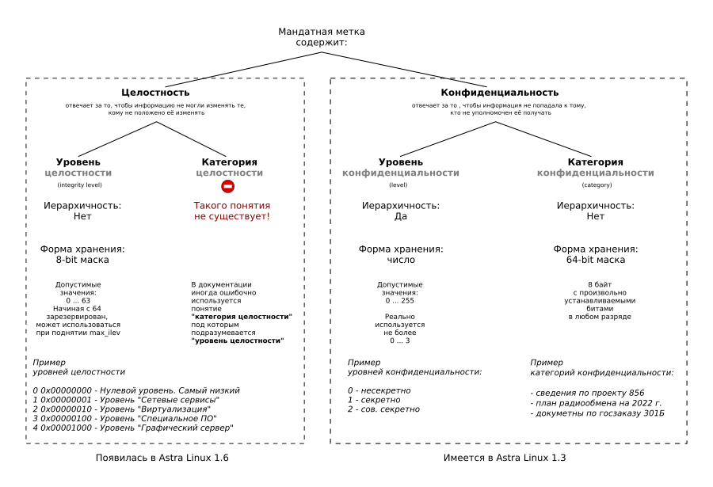

Документация по Asta Linux написана максимально сложно. Возможно, сделано это для того, чтобы корпоративные пользователи, в надежде разобраться со сложными и запутанными понятиями, закупали учебные курсы, проводимые в учебном центре Русбитех. А возможно, документация написана из принципа "минимальной достаточности", когда предполагается, что все используемые термины знакомы читателю откуда-то извне.
Дело осложняется тем, что документация, идущая с различными версиями Astra Linux, имеет одинаковые номера документов, полностью совпадающие до последней буквы. И в тексте самой документации старательно избегают любое упоминание о версии дистрибутива, для которого она написана. Связано это с процедурой прохождения сертификации, чтобы в период действия сертификата можно было выпускать новые версии дистрибутива, не меняя децимальный номер. Косвенно понять, к какому дистрибутиву относится документация, можно только по последней дате в листе регистрации изменений.
* * *
Начиная с версии 1.6 (возможно, 1.5) подсистема распределения мандатных прав доступа была сильно изменена. И из одного только раздела "Мандатные управление доступом и контроль целостности" понять, как устроена мандатная метка, очень сложно. Ниже дана инфографика о составе мендатной метки, которая поможет понять, что такое уровень конфиденциальности, категория конфиденциальности, уровень целостности.

Помимо уровня целостности, в Astra 1.6 появились флаги, позволяющие разруливать блокирующиеся ситуации в мандатных правах, появившиеся в результате совокупности применения уровня конфиденциальности, категории конфиденциальности, уровня целостности и иерархичности применения этих уровней на файловых объектах.
В документации иногда употребляется термин классификационная метка. Классификационная метка включает в себя уровень конфиденциальности и категории конфиденциальности, но не включает уровень целостности. Если речь идет о наследовании только классификационной метки, то предполагается, что наследоваться будет уровень и категория конфиденциальности базового объекта, а уровень целостности будет установлен нулевым.
Так же, существует термин метка целостности. Она обозначает ту часть мандатной метки, в которой хранится уровень целостности.
Примечание: к этой заметке прикрепелена эта же картинка в крупном разрешении и ее векторный исходник.